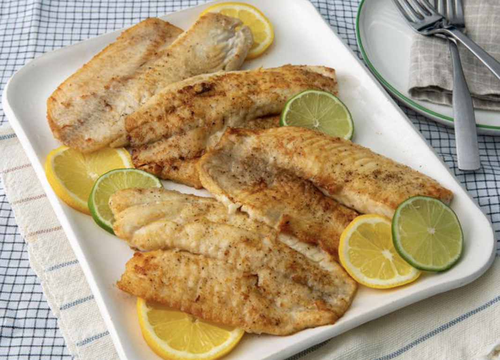

Pan-Seared Tilapia

Pan-Seared Tilapia
This quick and easy Tilapia will be a crowd pleaser for sure!
Ingredients:
- 4(4 ounce) tilapia fillets
- salt and ground black pepper to taste
- 1/2 cup all-purpose flour
- 1 tablespoon olive oil
- 2 tablespoons unsalted butter, melted
- 1 tablespoon lemon juice, or to taste (Optional)
- 1 teaspoon chopped fresh flat-leaf parsley, or to taste (Optional)
- 1/2 teaspoon chopped fresh thyme, or to taste (Optional)
Steps:
- Rinse tilapia fillets in cold water and pat dry with paper towels.
Season both sides of each fillet with salt and pepper.
- Place flour in a shallow dish. Gently press each fillet into the
flour to coat and shake off any excess.
- Heat olive oil in a large skillet over medium-high heat. Cook tilapia
fillets in the hot oit, in batches if necessary, until fish
flakes easily with a fork, about 4 minutes per side.
- Brush melted butter onto the tilapia fillets in the last minute
before removing from the skillet.
- Drizzle fillets with lemon juice and garnish with parsley and thyme.
- Enjoy!